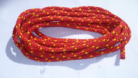

Wednesday, September the 4th, 2013
back to: title, date or indexes
The painter Duff Painter was known as “the painter of painters”. This was not because he was considered the greatest of painters, nor that he was held in the highest of esteem by his fellow painters. Rather, he was dubbed “the painter of painters” because of the single-minded intensity of his vision. During his long career, Duff Painter confined himself to one subject. All he ever painted was painters, that is, the lengths of rope attached to the bows of boats for tying them to the quayside, or to bigger ships.
Painter's paintings of painters were done in an incoherent jumble of styles, and he worked fast, often completing several paintings of painters in a single day. He might do an impressionistic daub in the morning, an expressionistic daub in the afternoon, and a quite frankly cack-handed impasto mulch in the evening. When one considers that he lived to the age of ninety, and was active up to the very end, it comes as no surprise to learn that a complete catalogue raisonné of his output has yet to be compiled—though not for want of trying.
The art critic Godolphin Weems has spent years devoting himself to the project, trying to track down every single Painter painter painting in existence, photographing it with a superduper high resolution camera, writing a brisk yet captivating thousand word essay on it, and ranking it in order of both painterliness and importance. So tireless and unstinting has Weems been that today he cuts a sorry figure, sprawled on a municipal park bench in a dilapidated seaside resort, swigging turps from a bottle wrapped in a paper bag. Now almost ninety himself, Weems is no more than half-way through his mighty task.
He has not yet, for example, managed to locate the astonishing works of Painter's late period, where he took to daubing paint directly on to painters. Many of these so-called “ropey paintings” are probably attached to the bows of boats, tied to quaysides or ships, and God alone knows where they are scattered upon the waterways of the world.

A hyperrealist painting of a painter by Duff Painter (Cat. no. 1,386,037a)
Hooting Yard on the Air, September the 19th, 2013 : “Farmers' Knitwear” (starts around 17:51)